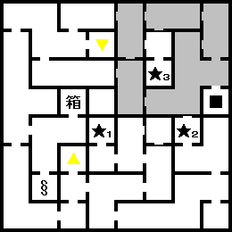
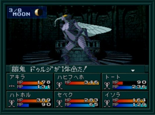

- 시설
- 공략
- 13F
- BOSS:유귀 두르지
시설
- 7F : 라그의 가게, CB
- 9F : 방어구
- 10F : 회복
- 11F : 무기
- 12F : MAG
공략
어두운 통로에서 의문의 미녀와 조우하면 FLY 상태에 걸리는 일이 있다. FLY 상태가 되면 속도는 40, 나머지는 전부 1로 능력치가 변화된다.
여기서 출현하는 "Lv31 천사 プリンシパリティ"는 연기의 검(練気の剣)을 떨어뜨린다.
9F의 방어구점에서 남성 삼신기 중 2개를 팔고 있으니 구입하면 좋다.
13F

- ★1 : 밸브
- ★2 : 의문의 미녀
- ★3 : 두르지
밸브를 열어두자. 앞으로 나오는 밸브들은 지역간에 이동하게 해주는 GEYSER를 활성화 시켜주는 역활을 한다. 꼭 열어두자.
BOSS:유귀 두르지와 전투. 쓰러뜨리고 14F에 올라가자.
BOSS:유귀 두르지

| 이름 |
Lv54 幽鬼 ドゥルジ |
| HP |
8080 |
| 마법/특기 |
ムドオン, デカジャ, バエルののろい, ランディヘイズ, しょうかえき, すいつき, ディアラマ |
아마 주인공이나 아키라 둘 중 하나는 FLY 상태일 것이다. 이 상태에서 속도가 최고치로 올라가기 때문에 가장 빠르게 행동할 수 있게 된다. 보스의 즉사계 기술을 막기 위해 FLY상태인 캐릭터로 파이널 가드(ファイナルガード) 또는 테트라샤(テトラジャ) 를 사용하면서 공격하면 쉽게 이길 수 있다.